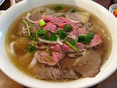
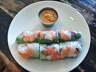
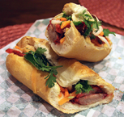
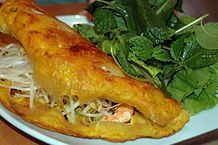
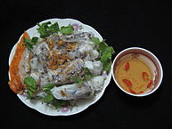
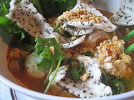

Pho
The soup is so flavorful and takes a lot of effort to make.
The soup is so flavorful and takes a lot of effort to make.

chả giò
These are so good because the flavor texture is so unique.
These are so good because the flavor texture is so unique.

BÁNH MÌ
Vietnamese sandwich with pork and veggies.
Vietnamese sandwich with pork and veggies.

Banh Xeo
Viet version pancake
Viet version pancake

Bánh cuốn
Another rice cake dish
Another rice cake dish

Mi Quang
Another noodle dish. I love noodles.
Another noodle dish. I love noodles.